This article describes the data visualization functions available in the actxps package.
Both ExpStats and TrxStats objects have a plot() method that creates plots of termination study results (ExpStats objects1) or transaction study results (TrxStats objects2).
Additional plotting methods create special plots that are not possible or difficult to produce using plot().
plot_actual_to_expected() draws a plot of all actual-to-expected termination rates.
plot_utilization_rates() creates a side-by-side plot of transaction frequency and severity.
The table() function creates HTML tables of termination study or transaction study results.
The exp_shiny() function launches a Shiny app that includes interactive filters, grouping variables, and data visualizations.
Plotting termination studies
Before we start plotting, we need to create experience study data. The examples below use the simulated census_dat and withdrawals data sets that come with the actxps package. First, exposure records are created using ExposedDF(). Then, illustrative expected values and withdrawal transactions are added to the data.
The default plot produced by ExpStats.plot() is a line plot of the observed termination rate (q_obs). The x variable corresponds to the first grouping variable of the ExpStats object3.
exp_res.plot()
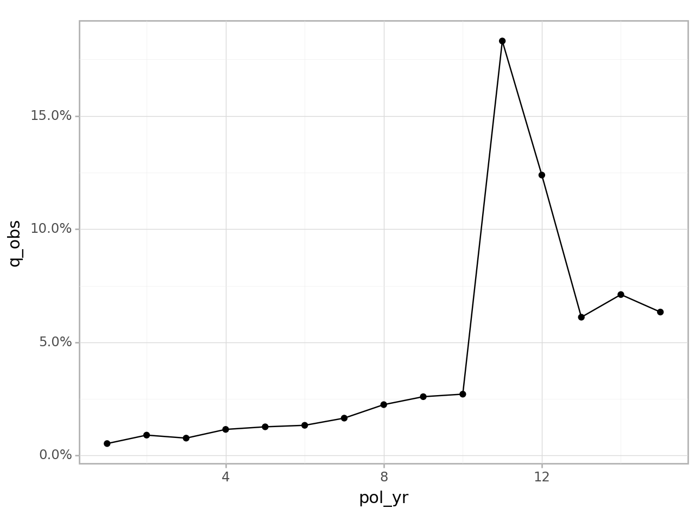
<Figure Size: (640 x 480)>
If there is a second grouping variable, it is mapped onto color.
Alternatively, we could supply a mapping for more fine-grained control. Note that the example below adds an additional mapping for linetype which is otherwise unavailable under the defaults for ExpStats.plot().
from plotnine import aesexp_res2.plot(mapping=aes(x='pol_yr', y='claims', color='inc_guar', linetype='inc_guar'), facets='product')
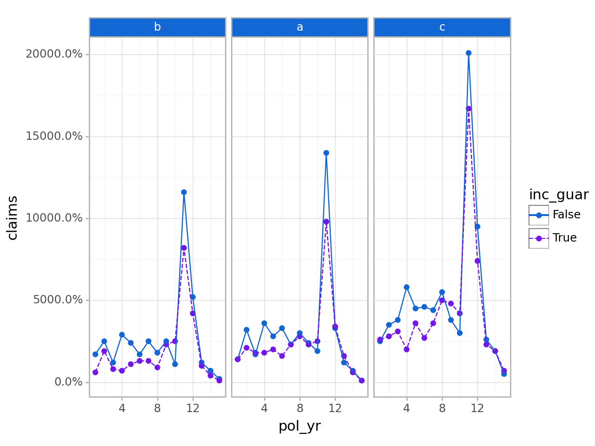
<Figure Size: (640 x 480)>
The ExpStats.plot() function defaults to percentages for y-axis labels. As seen in the immediately preceding example, this will not always be appropriate. The y_labels function can be used to pass a different labeling function.
exp_res2.plot(mapping=aes(x='pol_yr', y='claims', color='inc_guar', linetype='inc_guar'), y_labels=lambda l: [f"{v:,.0f}"for v in l], facets='product')
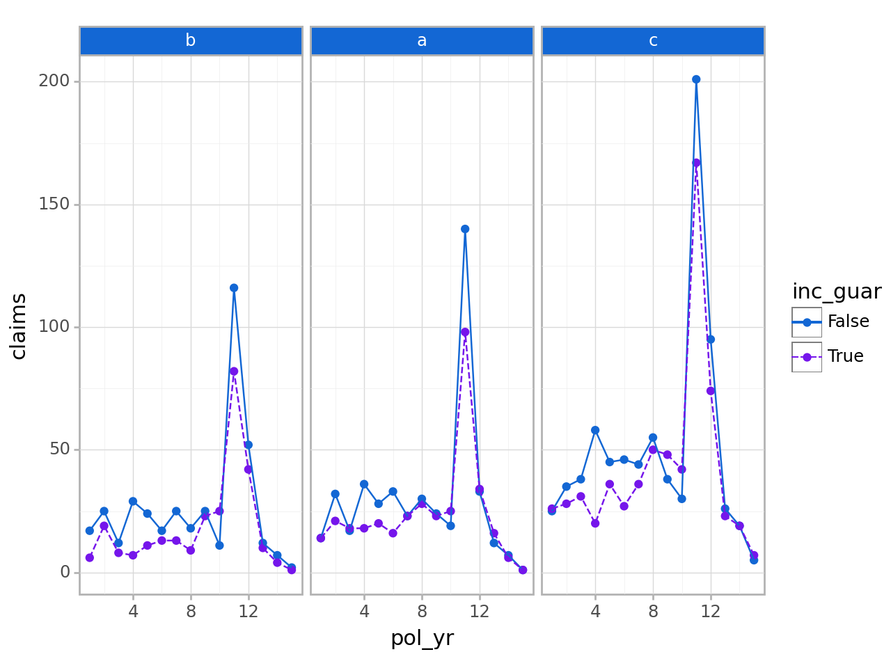
<Figure Size: (640 x 480)>
To set axis scales that vary by subplot, use the scales argument. This argument is subsequently forwarded to plotnine.facet_wrap(). Under the default value “fixed”, scales are identical across subplots. If “free_y” is passed as shown below, the y-scales will vary. If “free_x” is passed, the x-scales will vary. If “free” is passed, both the x- and y-scales will vary.
exp_res2.plot(scales="free_y")
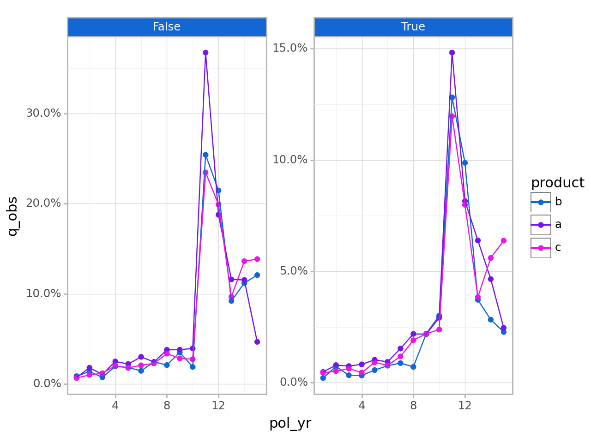
<Figure Size: (640 x 480)>
The geoms argument can be used to change the plotting geometry. Under the default value of “lines”, points and lines are displayed. If “bars” is passed, a bar plot will be drawn. If “points” is passed, a scatter plot will be drawn.
exp_res.plot(geoms="bars")
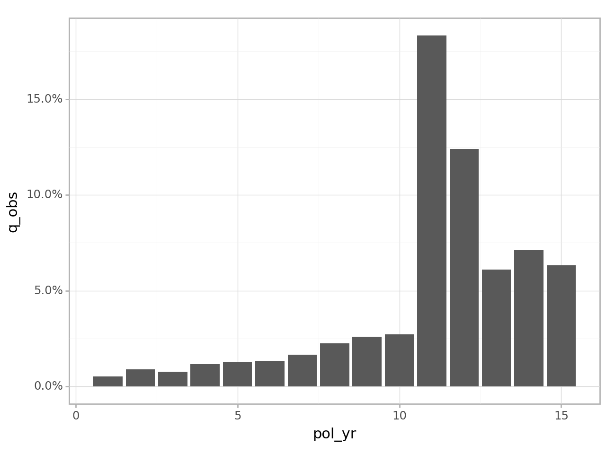
<Figure Size: (640 x 480)>
If the y_log10 argument is set to True, the y-axis will be plotted on a logarithmic base ten scale.
exp_res.plot(y_log10=True)
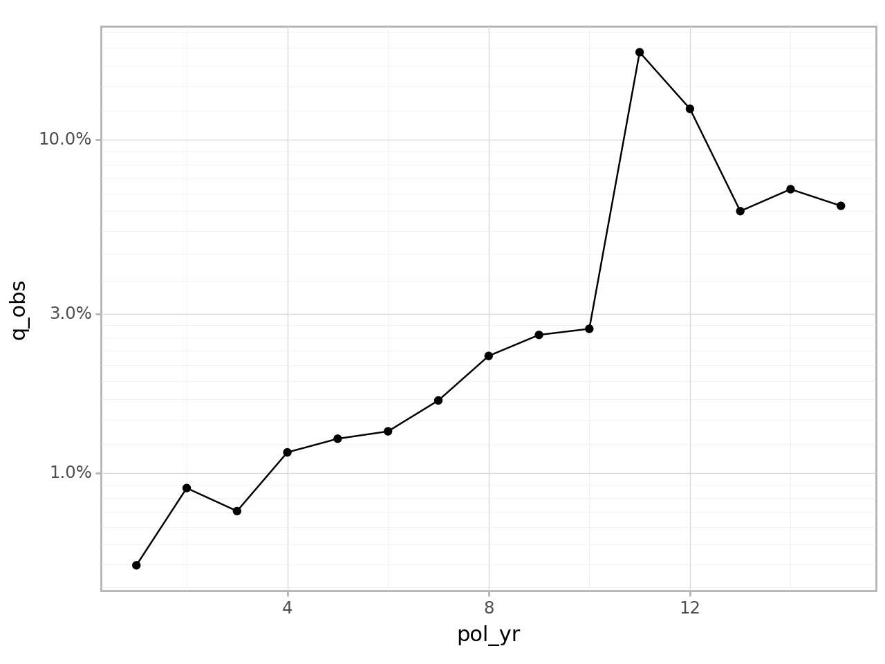
<Figure Size: (640 x 480)>
Confidence interval error bars can be added to a plot by passing conf_int_bars=True. Confidence intervals will only be displayed if they are available for the selected y variable.
exp_res.plot(conf_int_bars=True)
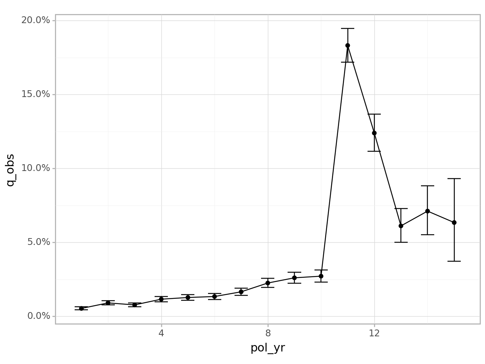
<Figure Size: (640 x 480)>
ExpStats.plot_termination_rates()
A limitation of ExpStats.plot() is that it doesn’t allow one to plot observed termination rates alongside one or more expected termination rates. This type of plot is common as an alternative to actual-to-expected ratio plots.
The plot_termination_rates() method produces a plot of the observed termination rates plus any expected termination rates that were passed to the expected argument of exp_stats().
In the example below, a new ExpStats object is created that contains two sets of expected surrender rates. This object is then passed into plot_termination_rates().
In the plot above, termination rates are mapped to the y variable and the Series variable specifies a color scale. Similar to ExpStats.plot(), the x variable is the first grouping variable (here, pol_yr).
If the ExpStats object contains credibility-weighted termination rates4, these rates can be included in the plot using the argument include_cred_adj=True.
The plot_actual_to_expected() function is similar to plot_termination_rates() except that all actual-to-expected ratios are plotted on the y-axis instead.
exp_res3.plot_actual_to_expected()
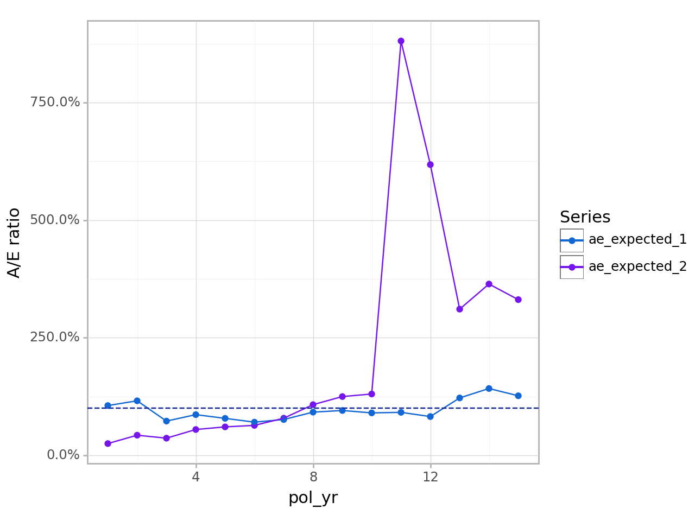
<Figure Size: (640 x 480)>
Relationship of ExpStats.plot_termination_rates() and ExpStats.plot_actual_to_expected() to ExpStats.plot()
Behind the scenes, plot_termination_rates() and plot_actual_to_expected() call plot() after reshaping the ExpStats object. As such, all arguments passed to ExpStats.plot() described above can also be passed to these functions. However, there is an exception: the y variable is reserved and cannot be modified. In addition, while the color variable can be overridden, this is discouraged because it may result in odd-looking plots.
Since these functions automatically create a color variable, any grouping variables beyond the first are used to create facets. This differs from ExpStats.plot() which uses grouping variables beyond the second to create facets
Plotting transaction studies
The actxps package also provides a plot() method for TrxStats objects. The TrxStats.plot() method has the same arguments as ExpStats.plot(), so all options described in the previous section can be used for transaction studies as well.
The y variable defaults to the observed transaction frequency (trx_util). Like ExpStats.plot(), any numeric column can be mapped onto the y-axis using the y or mapping arguments.
Under the defaults, TrxStats.plot() handles grouping variables the same as ExpStats.plot():
The first grouping variable is mapped onto x
The second grouping variable is mapped onto color
Any additional grouping variables are used to create subplots
In addition to the above, facets are also created for each transaction type found in the data.
The plot_utilization_rates() function creates a side-by-side view of both transaction frequency and severity. This type of plot is useful for answering questions like, “what percentage of customers are taking withdrawals each quarter, and of those taking withdrawals, what is the average percentage of account value taken out?”.
Transaction frequency is represented by utilization rates (trx_util). Severity is represented by transaction amounts as a percentage of one or more other columns in the data. All severity series begin with the prefix pct_of_ and end with the suffix _w_trx. The suffix refers to the fact that the denominator only includes records with non-zero transactions. Severity series are automatically selected based on column names passed to the percent_of argument in trx_stats(). If no “percentage of” columns exist, this function will only plot utilization rates.
Like plot_termination_rates() and plot_actual_to_expected(), this function calls plot() after reshaping the data. All arguments passed to TrxStats.plot() can be utilized by this function except y and scales. The y argument is reserved for utilization rates, and the scales argument is preset to allow differing scales between the frequency and severity subplots.
trx_res.plot_utilization_rates()
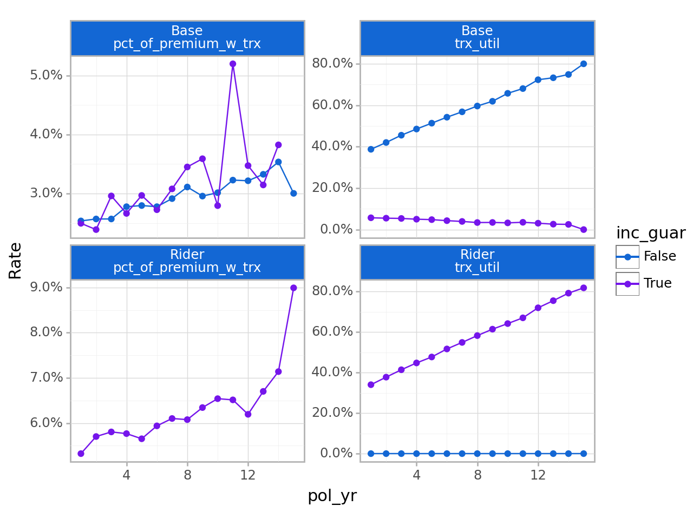
<Figure Size: (640 x 480)>
Tables
The table() method creates summary tables of termination or transaction study results. This method is available for ExpStats and TrxStats objects.
Termination study output example
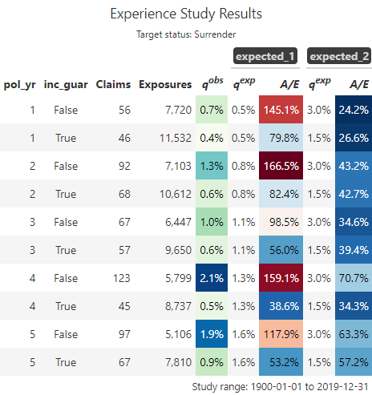
Transaction study output example
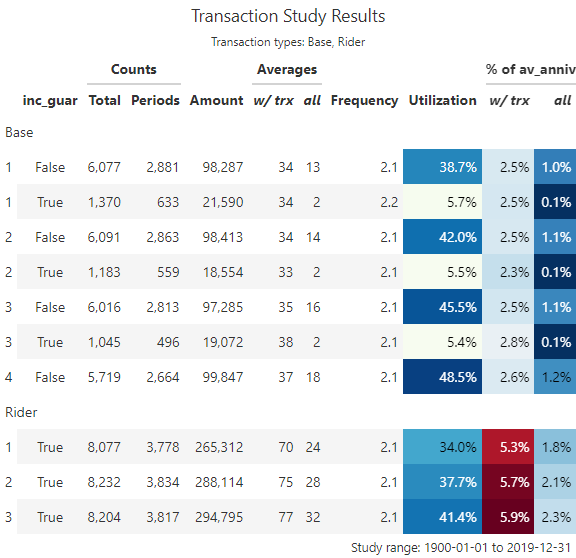
Arguments:
fontsize is a multiple that increases or decreases the font size. Values less than 100 decrease the font size, and values greater than 100 increase the font size.
decimals controls the number of decimal places displayed for percentage columns (default=1)
If colorful is True, conditional color formatting will be added to the table.
For termination studies, color_q_obs and color_ae_ specify the color palettes used for observed termination rates and actual-to-expected ratios, respectively.
For transaction studies, color_util and color_pct_of specify the color palettes used for utilization rates and “percentage of” columns, respectively.
These inputs must be strings referencing a Matplotlib colormap. For a full list of available palettes, see matplotlob.colormaps.
**rename_cols can be used to relabel columns. Names are equal to original column names and values equal the desired column labels. Most of the column names created by table() are presentation-ready, however, grouping variables on the left side of the table may require updates since they default to the variable names that appear in the data.
show_conf_int and show_cred_adj can be used to include any confidence intervals and credibility-weighted termination rates, if available. As a default, these columns are not included to avoid producing overcrowded tables.
Interactive Shiny app
ExposedDF.exp_shiny() is a powerful method that launches an interactive Shiny app containing filters, grouping variables, plots produced by plot(), tables produced by table(), and exporting capabilities.
The left sidebar of the app contains filtering widgets organized by data type for all variables passed to the predictors argument. If predictors is not specified, all columns in the data except policy numbers, statuses, termination dates, exposures, and transaction columns will be used. The type of widget will vary depending on the data type and number of unique values in each predictor.
At the top of the sidebar, information is shown on the percentage of records remaining after applying filters. A text description of all active filters is also provided.
The top of the sidebar also includes a “play / pause” switch that can pause reactivity of the app. Pausing is a good option when multiple changes are made in quick succession, especially when the underlying data set is large.
The “Grouping variables” box includes widgets to select grouping variables for summarizing experience. The “x” widget determines the x variable in the plot output. Similarly, the “Color” and “Facets” widgets are used for color and facets. Multiple faceting variable selections are allowed. For the table output, “x”, “Color”, and “Facets” have no particular meaning beyond the order in which grouping variables are displayed.
The “Study type” box will always include a tab for termination studies. If transactions are attached to the ExposedDF object5, an additional section will be displayed for transaction studies.
Termination study options include the ability to activate and deactivate expected values and the selection of an optional numeric weighting variable for claims and exposures. Available expected value choices are dictated by the expected argument. If this argument is not specified, any columns containing the word “expected” are assumed to be expected values.
Transaction study options include the ability to activate and deactivate transaction types, optional numeric columns to use in “percentage of” statistics, and an option to lump all transaction types into a single category.
The output section includes tabs for plots, tables, and exporting results.
The plot tab includes a plot and various options for customization:
y: y variable
Geometry: plotting geometry - bars, points and lines, or points only
Add Smoothing: plots smooth loess curves
Confidence intervals: If available, add confidence intervals error bars for around the selected y variable
Free y Scales: enables separate y scales in each plot
Log y-axis: plots all y-axes on a log-10 scale
The gear icon above the plot contains a pop-up menu for updating the size of the plot.
The table tab includes the table itself plus a pop-up menu for changing the table’s appearance:
The “Confidence intervals” and “Credibility-weighted termination rates” switches add these outputs to the table. These values are hidden as a default to prevent over-crowding.
The “Include color scales” switch disables or re-enables conditional color formatting.
The “Decimals” slider controls the number of decimals displayed for percentage fields.
The “Font size multiple” slider impacts the table’s font size
The export pop-up menu contains options for saving summarized experience data or the plot. Data is saved as a CSV file. The plot is saved as a png file.
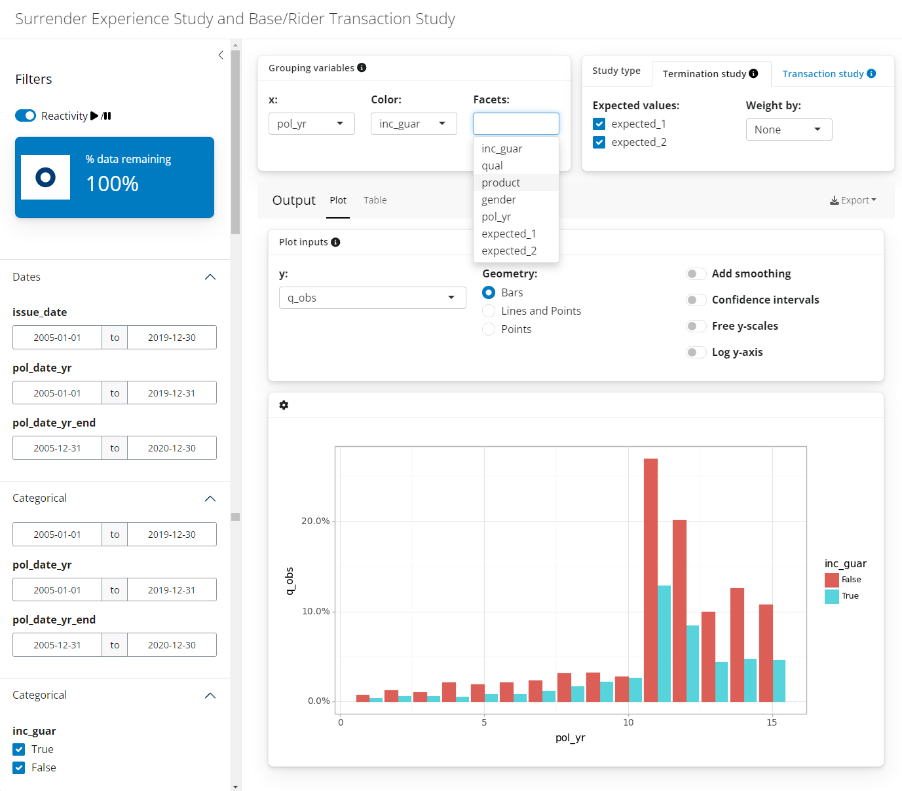
Other arguments
distinct_max: an upper limit on the number of distinct values a variable is allowed to have to be included as a viable option for the color and facets grouping variables. Default=25.
title: an optional title for the app
credibility, conf_level, cred_r: credibility options for termination studies. See exp_stats() for more information. Limited fluctuation credibility estimates at a 95% confidence within 5% of the theoretical mean assuming a binomial distribution are used as a default.
The conf_level argument is also used for confidence intervals for both termination and transaction studies.
bootswatch_theme: replace the default theme of the app by passing the name of a preset bootswatch theme.
Footnotes
ExpStats objects are created by ExposedDF.exp_stats() see Experience summaries for more information↩︎
TrxStats objects are created by ExposedDF.trx_stats() see Transactions for more information↩︎
If there are no grouping variables, a single point is plotted↩︎
See the credibility argument of exp_stats() for more information↩︎
See add_transactions() for information on attaching transactions to an ExposedDF object.↩︎